Maplet User Guide
Maplet is a mind map editor that runs in your browser. Edit on this device without an
account, download your work as .maplet files, and optionally save to Google
Drive automatically. It also opens MindMup .mup, Markdown and OPML files.
The officially supported browser is desktop Google Chrome. The screenshots below were captured automatically from the app.
1. Getting started
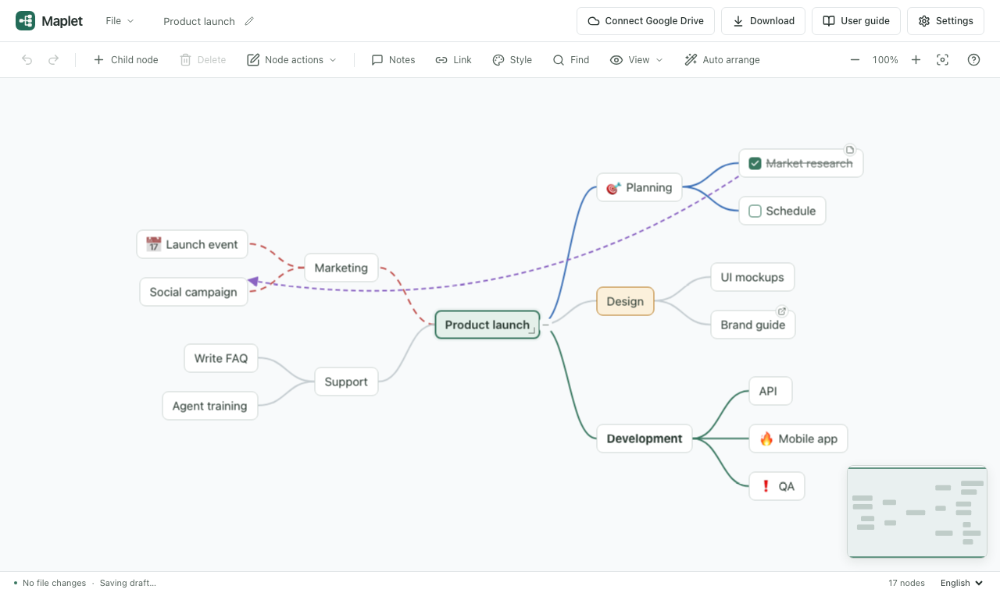
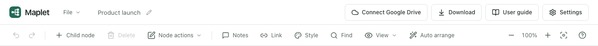
- Header
- The File menu, the file name (click to rename), Google Drive status, Download, User guide and Settings.
- Toolbar
- Undo and redo, Child node, Delete, the Node actions menu, Notes, Link, Style, Find, the View menu, Auto arrange, zoom and fit, and shortcut help (?).
- Canvas
- Where the map is drawn. Drag empty space to pan; use Ctrl+wheel or pinch to zoom. The minimap in the bottom right shows where you are.
- Status bar
- Save status, draft storage, selection count, node count and the language selector.
A new map starts with one central topic. Select it and start typing. If you were editing before, a Recover draft dialog appears.
2. Creating and editing nodes
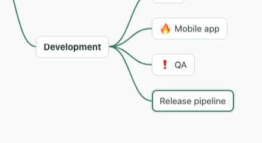
- Tab adds a child under the selected node and starts editing its title.
- Enter adds a sibling under the same parent.
- F2 or a double-click edits a title.
- While typing, Enter applies, Shift+Enter adds a line break, Esc cancels, and Tab applies and continues with a child.
- Delete removes a node and its descendants, asking first if it has any.
- Arrow keys move between nodes; Alt+↑/↓ reorders siblings.
- Undo any change with Ctrl/⌘+Z and redo with Ctrl/⌘+Shift+Z.
Drag a node's bottom-right corner sideways to change its width; double-click it to return to automatic size. The −/+ buttons on a branch collapse and expand it.
4. Selecting several nodes
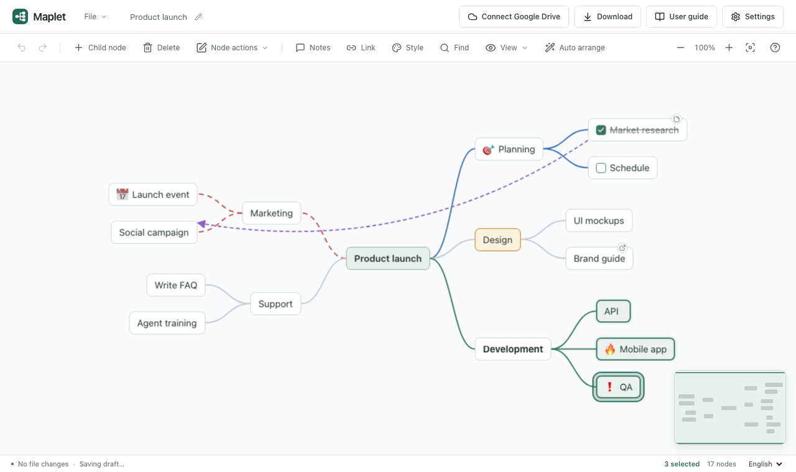
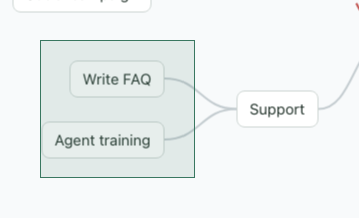
- Hold Shift or Ctrl/⌘ and click to add or remove nodes.
- Shift-drag on empty canvas to select the nodes inside a rectangle.
- Shift+arrow keys extend the selection; Ctrl/⌘+A selects every visible node.
- Delete, copy, cut, duplicate, move, side and style apply to the whole selection at once and undo in one step.
- Drag any selected node to move the group together.
- Esc or a click on empty canvas returns to one selected node.
5. Dragging
Dragging a node moves all its descendants with it. The rest of the map stays still while you drag, and where you drop decides what happens. A hint at the bottom of the canvas shows the current mode.
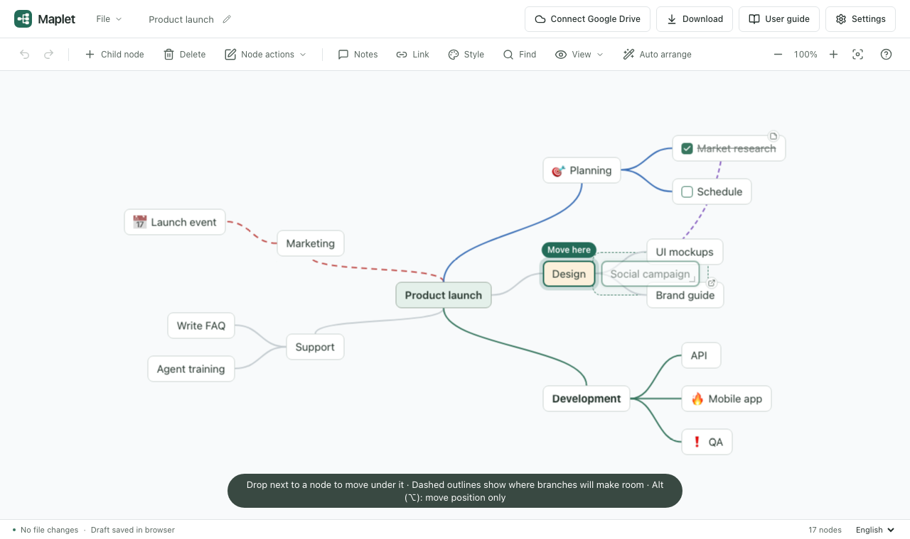
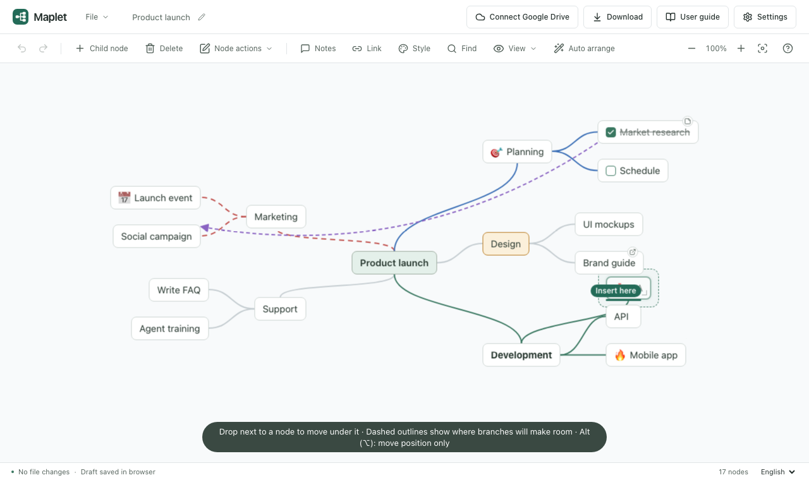
| Where you drop | Result |
|---|---|
| Next to or onto a node (within 16px) | Becomes its last child. On a central topic, it joins the side you dropped on. |
| Just above or below a node | Inserted before or after it. Under the same parent, only the order changes. |
| Empty space | Moves the position only. Dashed outlines show where overlapping branches will make room on release. |
| While holding Alt (⌥) | Moves the position only, never reparenting; other branches move aside live. |
Press Esc while dragging to put it back. A drop undoes in one step. To tidy the whole map, use Auto arrange in the toolbar.
6. Formatting and markers
Open Style from the node menu or the toolbar. With several nodes selected, only the settings you change apply to all of them.
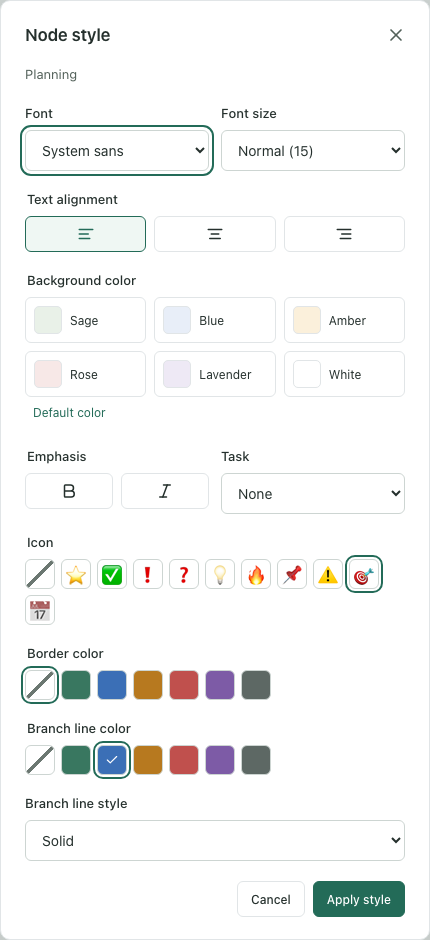
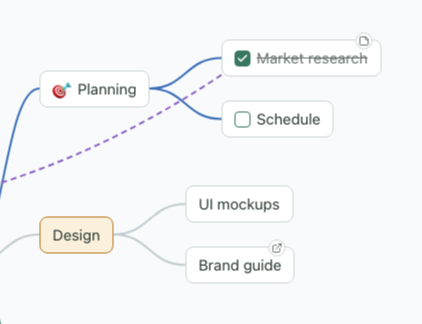
- Font, size and alignment: sans, serif or monospace; small, normal or large; three alignments.
- Background color: six light colors that stay readable in the dark theme.
- Bold and italic
- Task: a checkbox before the title. Tick it right on the node; done tasks are struck through.
- Icon: one of ⭐ ✅ ❗ ❓ 💡 🔥 📌 ⚠️ 🎯 📅.
- Border color, branch line color and style (solid, dashed, dotted): line settings carry down to child branches.
7. Notes, links and connections
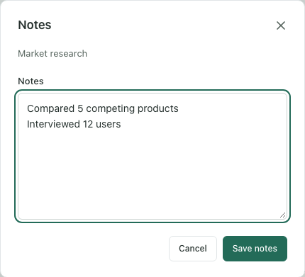
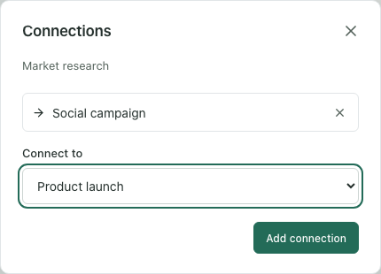
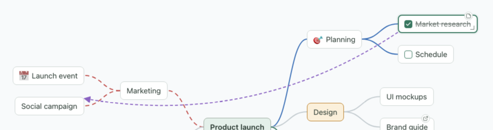
- A node with notes shows a small page badge; hover it to read the notes.
-
Links accept
http,httpsandmailtoaddresses only. Click the link badge to open it in a new tab. - Remove a connection in the connections dialog; deleting either node removes it too.
8. Find
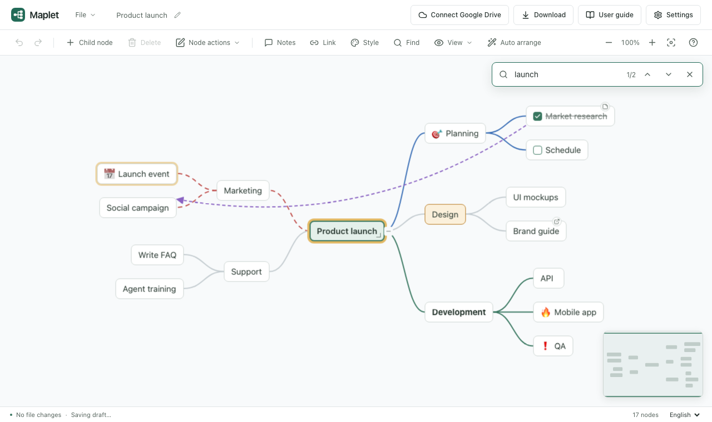
Open it with Ctrl/⌘+F or Find in the toolbar. It searches titles. Enter goes to the next result and Shift+Enter to the previous one; results inside collapsed branches are revealed. Close it with Esc.
9. View: levels, focus and minimap
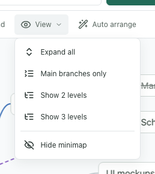
- Expand all: open every collapsed branch.
- Main branches only, Show 2 / 3 levels: see the outline of a large map quickly.
- Expand all below in the node menu expands one branch only.
- Show / Hide minimap: your choice is remembered on this device.
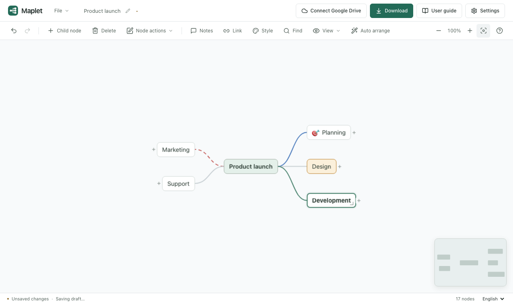
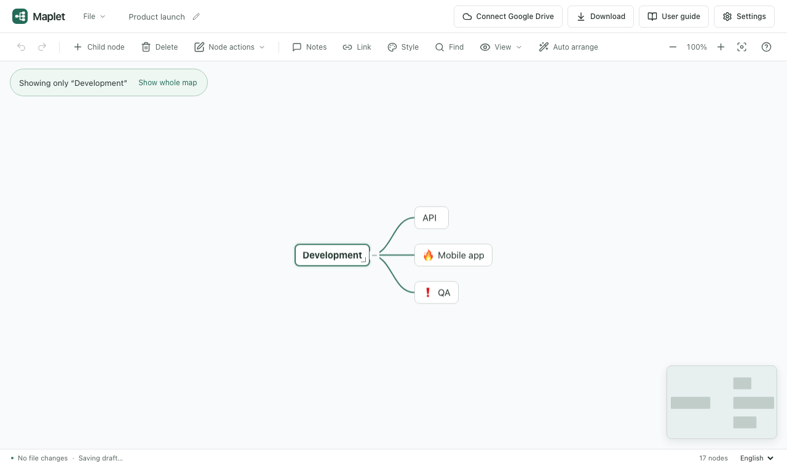
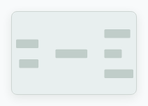
The minimap shows the whole map and the area you are looking at (green rectangle). Click or drag on it to move there. It hides while dragging and on narrow screens.
10. Opening, saving and exporting
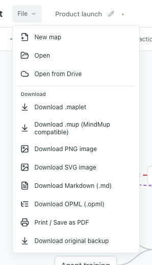
-
Open:
.maplet, MindMup.mup, Markdown.md, OPML.opmland indented.txt. You can also drop a file onto the window. -
Download (header button, Ctrl/⌘+S): saves a
.mapletfile with positions, styles, notes and connections. - Download .mup: a copy MindMup can open.
- PNG and SVG images: save the visible map as an image.
- Markdown and OPML: move to note-taking or outliner apps; hierarchy, notes and links only.
- Print / Save as PDF: choose “Save as PDF” in the print dialog for a PDF.
- Original backup: download an imported MindMup file exactly as it was.
Your edits are kept in this browser as a draft, so you can recover them after closing the window. On a shared computer, turn draft storage off in Settings.
11. Google Drive
When the deployment has a Google connection configured, a Drive button appears in the header. Connect, pick a save folder, and Maplet saves a few seconds after you stop editing.
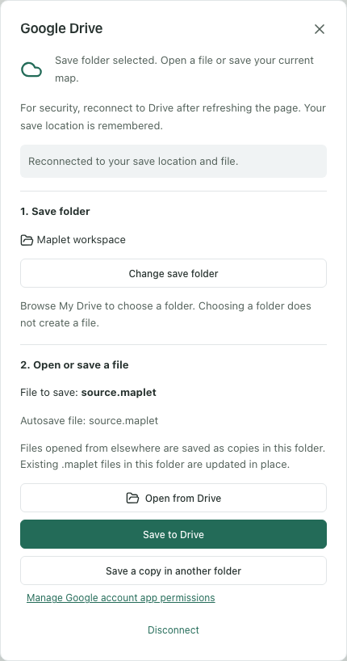
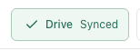
- Click Connect Google Drive in the header and sign in.
- Choose a save folder. Choosing a folder does not create a file.
- Open from Drive to open a file, or Save to Drive to save the current map.
- Later edits save automatically; the header shows editing, pending and synced.
If the same file changes elsewhere, changes that don't overlap merge automatically and you choose which side to keep for conflicts. For security you need to Reconnect after reloading the page, but the save location is remembered.
12. Settings, theme and language
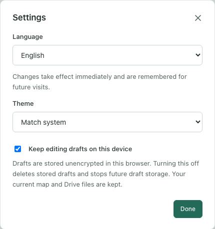
- Language: 한국어 or English. Also available in the status bar.
- Theme: match system, light or dark.
- Keep editing drafts on this device: turning it off deletes stored drafts and stops saving new ones.
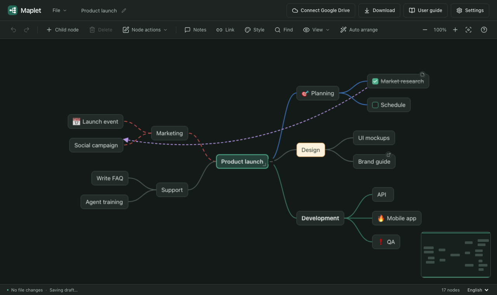
13. Keyboard shortcuts
The ? button in the toolbar or the ? key shows them in the app too.
| Keys | Action |
|---|---|
| Tab / Enter | Add a child / sibling |
| F2, double-click | Edit a title |
| Arrow keys | Move between nodes |
| Delete | Delete a node and its descendants |
| Ctrl/⌘+Z / Shift+Z | Undo / redo |
| Ctrl/⌘+S | Save to Drive / download the file |
| Ctrl/⌘+C X V D | Copy · cut · paste · duplicate |
| Alt+↑/↓ | Reorder siblings |
| Ctrl/⌘+F | Find |
| Ctrl/⌘+A | Select all visible nodes |
| Shift/Ctrl/⌘+click | Add to or remove from the selection |
| Shift+arrows / drag on empty canvas | Extend the selection / select an area |
| Esc | Cancel a drag, clear a multi-node selection |
| Right-click, Shift+F10 | Node menu · map menu on empty canvas |
| Alt (⌥)+drag | Move position only |
| Space+drag | Pan the canvas |
| Ctrl/⌘++ − 0 | Zoom in · zoom out · fit to screen |
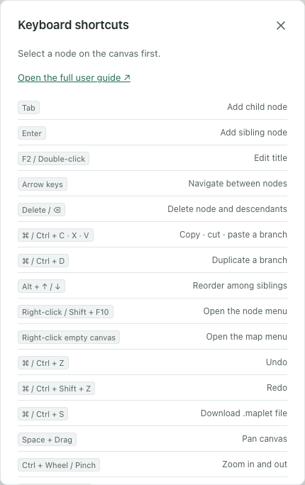
14. FAQ
Where are my edits stored?
While you edit, a draft is kept in this browser. To move to another device or browser,
Download a .maplet file or save to Google Drive.
I want to place a node next to another one, but it keeps becoming its child.
Hold Alt (⌥ on a Mac) while dragging to move the position only. If it already moved under the other node, press Ctrl/⌘+Z.
My map has become cluttered.
Click Auto arrange in the toolbar to reorganize the whole map by branch size. One undo brings the previous layout back.
I want to edit a MindMup file and keep using it in MindMup.
Use File → Download .mup for a compatible copy. Maplet-specific positions may look different in other editors, and Download original backup always gives you the original.
Drive disconnected after I reloaded the page.
For security, sign-in credentials are never stored. Click Reconnect in the header to keep saving to the remembered folder and file.